zk实践操作
1.入门基础
应用场景
- ZooKeeper主要服务于分布式系统，可以用ZooKeeper来做：统一配置管理、统一命名服务、分布式锁、集群管理。
- 使用分布式系统就无法避免对节点管理的问题(需要实时感知节点的状态、对节点进行统一管理等等)，而由于这些问题处理起来可能相对麻烦和提高了系统的复杂性，ZooKeeper作为一个能够通用解决这些问题的中间件就应运而生了。
从上面我们可以知道，可以用ZooKeeper来做：统一配置管理、统一命名服务、分布式锁、集群管理。
这里我们先不管统一配置管理、统一命名服务、分布式锁、集群管理每个具体的含义(后面会讲)
那为什么ZooKeeper可以干那么多事？来看看ZooKeeper究竟是何方神物，在Wiki中其实也有提到：
ZooKeeper nodes store their data in a hierarchical name space, much like a file system or a tree data structure ZooKeeper的数据结构，跟Unix文件系统非常类似，可以看做是一颗树，每个节点叫做ZNode。
每一个节点可以通过路径来标识，结构图如下：
数据结构
zookeeper数据模型的结构，就和linux的文件系统类似，看起来是一棵树，每个节点称作是一个ZNode。
每一个ZNode默认存储1MB的数据，每个ZNode都有唯一标识，可以通过命令显示节点的信息。
- 每当节点有数据变化，节点的版本号会累加
- 删除或者修改过时的节点，版本号不匹配的话会报错。
- 每个zk存储的数据不宜过大，一般就几KB
- 每个znode可以设置acl，进行用户的权限访问，不同的节点数据。
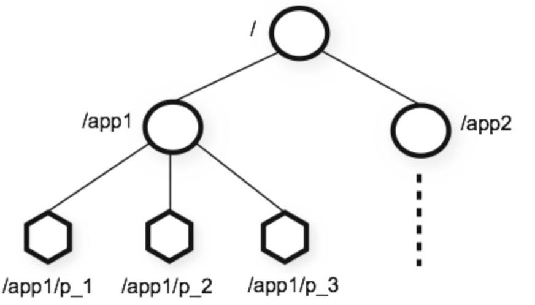
那ZooKeeper这颗"树"有什么特点呢？？ZooKeeper的节点我们称之为Znode，Znode分为两种类型：
- 短暂/临时(Ephemeral)：当客户端和服务端断开连接后，所创建的Znode(节点)会自动删除
- 持久(Persistent)：当客户端和服务端断开连接后，所创建的Znode(节点)不会删除
ZooKeeper和Redis一样，也是C/S结构(分成客户端和服务端)
监听器
在上面我们已经简单知道了ZooKeeper的数据结构了，ZooKeeper还配合了监听器才能够做那么多事的。
常见的监听场景有以下两项：
- 监听Znode节点的数据变化
- 监听子节点的增减变化，/app1节点，以及子节点是否有增减
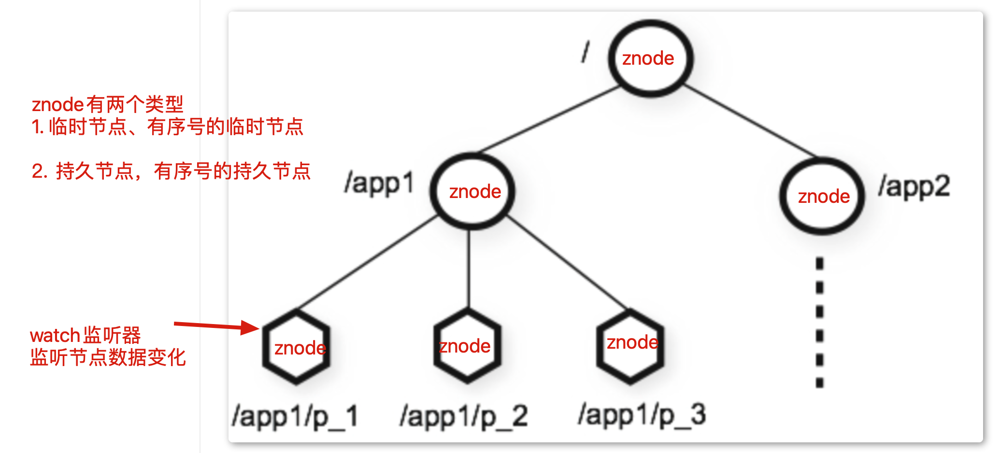
ZooKeeper强大的功能
下面我们来看看用ZooKeeper怎么来做：统一配置管理、统一命名服务、分布式锁、集群管理。
统一配置管理
比如我们现在有三个系统A、B、C，他们有三份配置，分别是ASystem.yml、BSystem.yml、CSystem.yml，然后，这三份配置又非常类似，很多的配置项几乎都一样。
- 此时，如果我们要改变其中一份配置项的信息，很可能其他两份都要改。并且，改变了配置项的信息很可能就要重启系统
于是，我们希望把ASystem.yml、BSystem.yml、CSystem.yml相同的配置项抽取出来成一份公用的配置common.yml，并且即便common.yml改了，也不需要系统A、B、C重启。
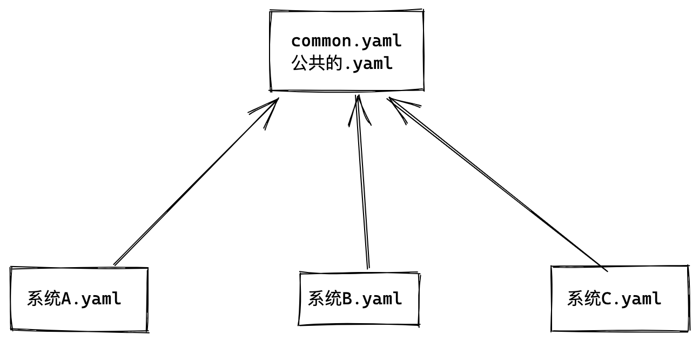
做法：我们可以将common.yml这份配置放在ZooKeeper的Znode节点中，系统A、B、C监听着这个Znode节点有无变更，如果变更了，及时响应。
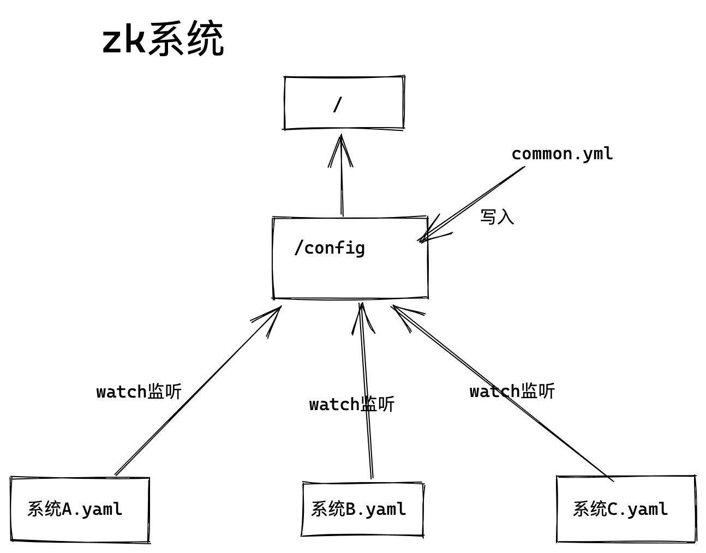
统一命名服务
统一命名服务的理解其实跟域名一样，是我们为这某一部分的资源给它取一个名字，别人通过这个名字就可以拿到对应的资源。
比如说，现在我有一个域名www.yuchaoit.cn，但我这个域名下有多台机器：
- 192.168.1.1
- 192.168.1.2
- 192.168.1.3
- 192.168.1.4
别人访问www.yuchaoit.cn即可访问到我的机器，而不是通过IP去访问。
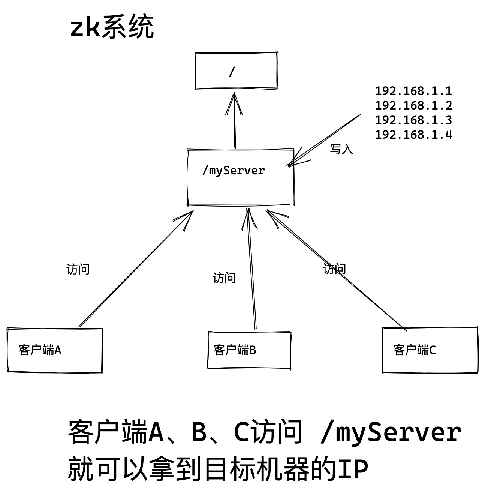
分布式锁
java开发需要了解的内容，暂时先略过。
分布式锁，是指多进程下对数据课程产生的资源抢夺。
由于锁的存在就保证了数据的依次操作，锁释放后其他人才能干活。
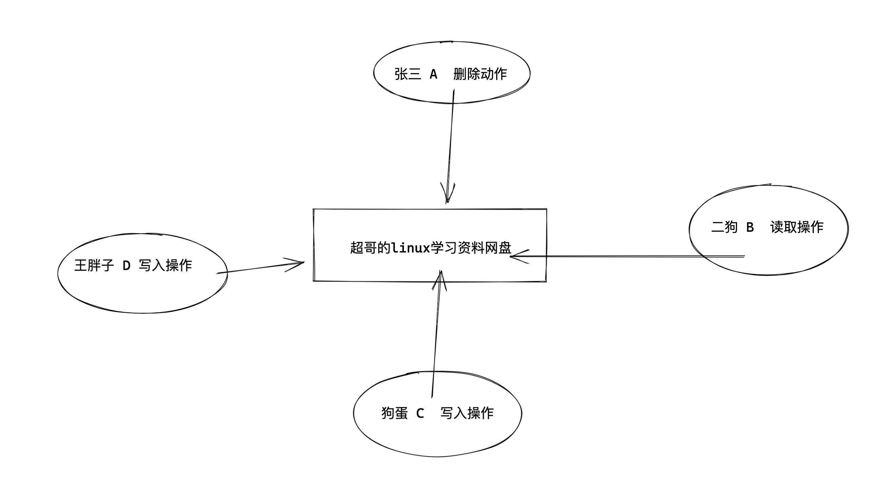
发布订阅
动态上下线
1.系统启动时，去zk注册信息，创建临时节点
2.zk获取到在线服务器的列表，且监听
3.zk若某节点下线，服务器也会通知其他节点该事件。
4.客户单
经过上面几个例子，我相信大家也很容易想到ZooKeeper是怎么"感知"节点的动态新增或者删除的了。
只要系统A挂了，那么对应的znode就会被删除，只要监听/cluster子节点的变化，就可以感知系统的故障，同时也告知B、C系统，A系统挂了。
类似于MQ，kafka，rabbitmq的功能
数据存储在znode上，订阅者会读取这个数据。
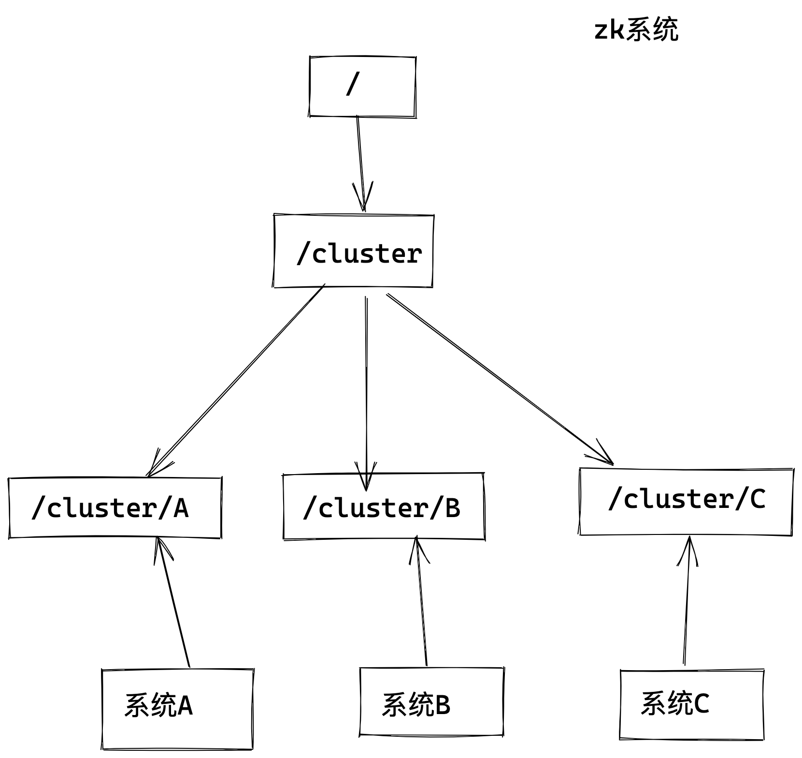
zk集群中的角色
像Mysql的主从模式会分master主节点和slave从节点一样，在zookeeper集群中，节点也有不同的角色，承担着不同角色。
zookeeper有三种角色：老大Leader(领导者） 2、老二Follower （跟随者） 3、老三Observer（观察者）。其中，Follower和Observer归类为Learner（学习者）
按重要性排序是Leader > Follower > Observer
老大领导者Leader。
Leader在集群中只有一个节点，可以说是老大No.1，是zookeeper集群的中心，负责协调集群中的其他节点。从性能的角度考虑，leader可以选择不接受客户端的连接。
主要作用有：
1、发起与提交写请求。
所有的跟随者Follower与观察者Observer节点的写请求都会转交给领导者Leader执行。Leader接受到一个写请求后，首先会发送给所有的Follower，统计Follower写入成功的数量。当有超过半数的Follower写入成功后，Leader就会认为这个写请求提交成功，通知所有的Follower commit这个写操作，保证事后哪怕是集群崩溃恢复或者重启，这个写操作也不会丢失。
2、与learner保持心跳
3、崩溃恢复时负责恢复数据以及同步数据到Learner
老二跟随者Follower。
Follow在集群中有多个，主要的作用有：
1、与老大Leader保持心跳连接
2、当Leader挂了的时候，经过投票后成为新的leader。leader的重新选举是由老二Follower们内部投票决定的。
3、向leader发送消息与请求
4、处理leader发来的消息与请求
老三观察者Observer
可以说Observer是zookeeper集群中最边缘的存在。Observer的主要作用是提高zookeeper集群的读性能。通过leader的介绍我们知道zookeeper的一个写操作是要经过半数以上的Follower确认才能够写成功的。那么当zookeeper集群中的节点越多时，zookeeper的写性能就 越差。为了在提高zookeeper读性能（也就是支持更多的客户端连接）的同时又不影响zookeeper的写性能，zookeeper集群多了一个儿子Observer，只负责：
1、与leader同步数据
2、不参与leader选举，没有投票权。也不参与写操作的提议过程。
3、数据没有事务化到硬盘。即Observer只会把数据加载到内存。
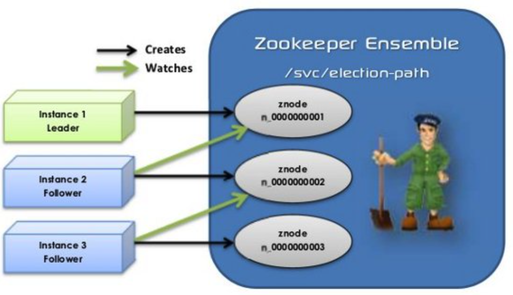
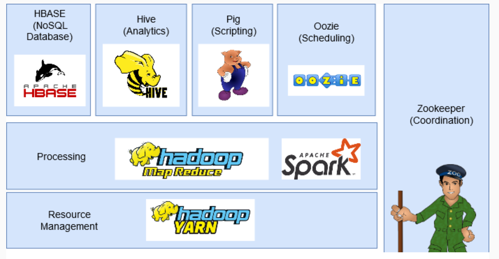
2.安装部署
# 查看zk运行状态
[root@localhost bin]# /opt/zookeeper/bin/zkServer.sh status
/usr/bin/java
ZooKeeper JMX enabled by default
Using config: /opt/zookeeper/bin/../conf/zoo.cfg
Client port found: 2181. Client address: localhost.
Mode: standalone
[root@localhost bin]#
[root@localhost bin]# jps -l
12322 org.apache.zookeeper.server.quorum.QuorumPeerMain
73240 sun.tools.jps.Jps
[root@localhost bin]#
# 脚本客户端命令
[root@localhost bin]# pwd
/opt/zookeeper/bin
[root@localhost bin]# ./zkCli.sh
# zoo.cfg配置文件
[root@localhost conf]# grep '^[a-z]' zoo.cfg
tickTime=2000 # zk服务器和客户端通信，心跳时间，毫秒
initLimit=10 # leader > follower 初始连接时，能容忍的tickTIme的数量，也就是总时间
syncLimit=5 # leader > follower 之间通信时间，如果超过 syncLimit * tickTime，Leader认为F挂了
dataDir=/opt/zookeeper/zkdata # 数据目录
clientPort=2181 # 客户端连接端口
[root@localhost conf]#
3.zk集群安装
1. 三台机器，都准备好zk
[root@devops01 /opt]#java -version
java version "1.8.0_181"
Java(TM) SE Runtime Environment (build 1.8.0_181-b13)
Java HotSpot(TM) 64-Bit Server VM (build 25.181-b13, mixed mode)
2.
tar -zxf apache-zookeeper-3.5.6-bin.tar.gz
ln -s /opt/apache-zookeeper-3.5.6-bin/ /opt/zookeeper
3.修改配置启动，且修改zk机器的id号，三台机器都要执行
mkdir -p /opt/zookeeper/zkData
cd /opt/zookeeper/conf
cp zoo_sample.cfg zoo.cfg
sed -i '/dataDir=/c dataDir=/opt/zookeeper/zkData' zoo.cfg
4. 创建服务器编号文件，得在数据目录下，zk源码要求文件名是myid，机器区别开就好。
就是每个机器的唯一标识
cd /opt/zookeeper/zkData
echo '1' > myid
echo '2' > myid
echo '3' > myid
# 检查
ls /opt/zookeeper/zkData
5.继续修改zoo.cfg配置文件，添加集群信息
# 固定语法格式：server.节点ID=ip:数据同步端口:选举端口
# 节点ID：服务id手动指定1至125之间的数字，并写到对应服务节点的 {dataDir}/myid 文件中。
# IP地址：节点的远程IP地址
# 数据同步端口：主从同步数据复制端口，follower和leader交换数据
# 远举端口：主节点挂了，选举新的主节点的通信端口。leader挂了需要选举新的主节点，通信端口。
# tail -3 zoo.cfg
server.1=10.0.0.18:2888:3888
server.2=10.0.0.19:2888:3888
server.3=10.0.0.20:2888:3888
6.启动zk集群
/opt/zookeeper/bin/zkServer.sh start
/opt/zookeeper/bin/zkServer.sh status
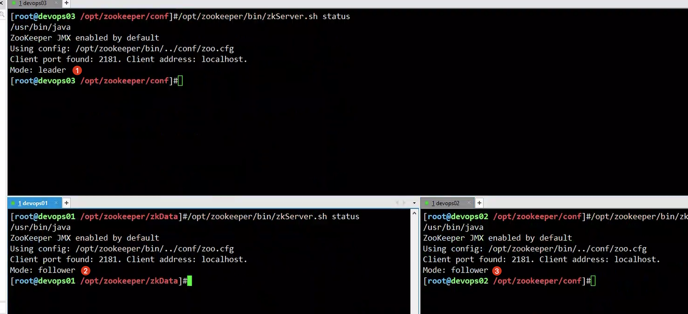
4.zk选举机制
初始化选举
1. 服务器A启动、发起选举，只有单机因此投自己一票，但是机器数量不达最少的3台，选举无法继续，服务器A状态为looking
2. 服务器B启动，发起选举，根据myid越大，作为leader，因此服务器B两票，服务器A零票，但依然未达到最少的3台，依然looking
3.服务器C启动，发起选举，myid最大是3，因此最后选票是，服务器C三票。
此时服务器C是leading、其他机器是following
4.又加入新zk节点，发起选举，其他节点并非looking状态，不会再改票，因此还以服务器C位leader
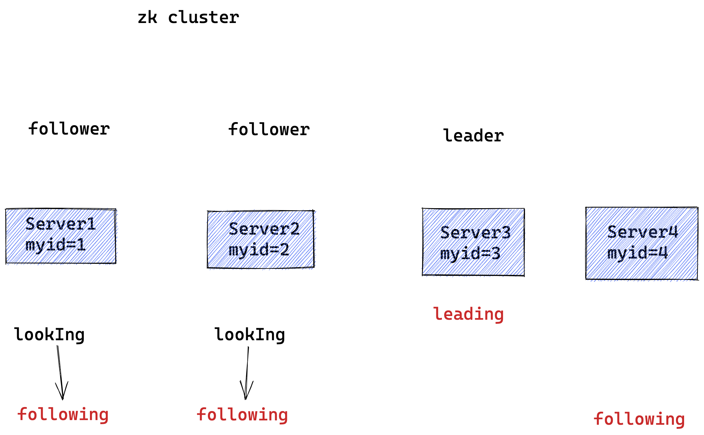
每台zk机器，都有sid，也就是服务器唯一标识id号，同于myid。
5.节点管理
启停管理
做好免密
yum install sshpass -y
echo "正在创建公私钥..."
if [ -f /root/.ssh/id_rsa ]
then
echo "密钥对已经存在,请检查！"
else
ssh-keygen -f /root/.ssh/id_rsa -N '' > /tmp/create_ssh.log 2>&1
fi
#2.管理机自动分发公钥到备管理机
echo "正在分发公钥中...分发的机器列表是{18,19,20}"
for ip in {18,19,20}
do
sshpass -p '123123' ssh-copy-id 10.0.0.${ip} -o StrictHostKeyChecking=no > /tmp/create_ssh.log 2>&1
echo "正在验证免密登录结果中...."
echo "远程获取到主机名: $(ssh 10.0.0.${ip} hostname)"
done
管理脚本
#!/bin/bash
# author: www.yuchaoit.cn
case $1 in
"start"){
for i in {18,19,20}
do
echo "--zk 10.0.0.$i 启动中..."
ssh 10.0.0.$i "/opt/zookeeper/bin/zkServer.sh start"
echo
echo
done
}
;;
"stop"){
for i in {18,19,20}
do
echo "--zk 10.0.0.$i 关闭中..."
ssh 10.0.0.$i "/opt/zookeeper/bin/zkServer.sh stop"
echo
echo
done
}
;;
"status"){
for i in {18,19,20}
do
echo "--zk 10.0.0.$i 状态查看---"
ssh 10.0.0.$i "/opt/zookeeper/bin/zkServer.sh status"
echo
echo
done
}
;;
esac
客户端操作
# 连接指定zk服务器
[root@devops01 ~]#/opt/zookeeper/bin/zkCli.sh -server 10.0.0.19:2181
# help查看命令帮助
[zk: 10.0.0.19:2181(CONNECTED) 1] ls / # 查看路径
[zookeeper]
[zk: 10.0.0.19:2181(CONNECTED) 2]
[zk: 10.0.0.19:2181(CONNECTED) 2] ls -s /
[zookeeper]cZxid = 0x0 # 创建节点时的一个事务id
ctime = Thu Jan 01 08:00:00 CST 1970 # 创建节点的时间，
mZxid = 0x0 # 最后更新的事务
mtime = Thu Jan 01 08:00:00 CST 1970 # 最后一次修改节点的时间
pZxid = 0x0 # 最后更新的子节点事务id
cversion = -1 # 子节点变化的次数
dataVersion = 0 # 节点变化号
aclVersion = 0 # 节点访问控制变化号
ephemeralOwner = 0x0 # 如果是临时节点，就是session id ，非临时节点就是0
dataLength = 0
numChildren = 1
[zk: 10.0.0.19:2181(CONNECTED) 3]
# 链接本地zk服务端，已连接
WATCHER::
WatchedEvent state:SyncConnected type:None path:null
[zk: localhost:2181(CONNECTED) 0]
# 基础环境，没有任何数据
[zk: localhost:2181(CONNECTED) 0] ls /
[zookeeper]
[zk: localhost:2181(CONNECTED) 1]
[zk: localhost:2181(CONNECTED) 1] ls /zookeeper
[config, quota]
[zk: localhost:2181(CONNECTED) 2]
[zk: localhost:2181(CONNECTED) 2] ls /zookeeper/quota
[]
[zk: localhost:2181(CONNECTED) 3]
[zk: localhost:2181(CONNECTED) 3] ls /zookeeper/config
[]
[zk: localhost:2181(CONNECTED) 4]
znode管理命令
# 查看znode的状态信息
[zk: localhost:2181(CONNECTED) 2] ls -s /
[zookeeper]cZxid = 0x0
ctime = Thu Jan 01 08:00:00 CST 1970
mZxid = 0x0
mtime = Thu Jan 01 08:00:00 CST 1970
pZxid = 0x0
cversion = -1
dataVersion = 0
aclVersion = 0
ephemeralOwner = 0x0
dataLength = 0
numChildren = 1
[zk: localhost:2181(CONNECTED) 3]
# stat 等同于 ls -s
[zk: localhost:2181(CONNECTED) 3] stat /
cZxid = 0x0
ctime = Thu Jan 01 08:00:00 CST 1970
mZxid = 0x0
mtime = Thu Jan 01 08:00:00 CST 1970
pZxid = 0x0
cversion = -1
dataVersion = 0
aclVersion = 0
ephemeralOwner = 0x0
dataLength = 0
numChildren = 1
[zk: localhost:2181(CONNECTED) 4]
# 获取znode数据，默认空
[zk: localhost:2181(CONNECTED) 6] get /
[zk: localhost:2181(CONNECTED) 7]
create
# 创建节点，默认是持久化的
[zk: localhost:2181(CONNECTED) 8]
[zk: localhost:2181(CONNECTED) 8] create /chaoge linux666
Created /chaoge
[zk: localhost:2181(CONNECTED) 9] ls
ls [-s] [-w] [-R] path
[zk: localhost:2181(CONNECTED) 10] ls /
[chaoge, zookeeper]
# 查看节点数据
[zk: localhost:2181(CONNECTED) 12] get /chaoge
linux666
[zk: localhost:2181(CONNECTED) 13]
# 查看节点状态
[zk: localhost:2181(CONNECTED) 13] stat /chaoge
cZxid = 0x200000008
ctime = Fri Nov 11 00:23:17 CST 2022
mZxid = 0x200000008
mtime = Fri Nov 11 00:23:17 CST 2022
pZxid = 0x200000008
cversion = 0
dataVersion = 0
aclVersion = 0
ephemeralOwner = 0x0
dataLength = 8
numChildren = 0
# 创建临时节点
[zk: localhost:2181(CONNECTED) 14] create -e /chaoge/test test666
Created /chaoge/test
[zk: localhost:2181(CONNECTED) 15] stat /chaoge
cZxid = 0x200000008
ctime = Fri Nov 11 00:23:17 CST 2022
mZxid = 0x200000008
mtime = Fri Nov 11 00:23:17 CST 2022
pZxid = 0x200000009
cversion = 1 # 子节点有更新，版本号+1
dataVersion = 0
aclVersion = 0
ephemeralOwner = 0x0
dataLength = 8
numChildren = 1
[zk: localhost:2181(CONNECTED) 16]
# 查看临时节点
[zk: localhost:2181(CONNECTED) 16] stat /chaoge/test
cZxid = 0x200000009
ctime = Fri Nov 11 00:24:58 CST 2022
mZxid = 0x200000009
mtime = Fri Nov 11 00:24:58 CST 2022
pZxid = 0x200000009
cversion = 0
dataVersion = 0
aclVersion = 0
ephemeralOwner = 0x10005fdea010001 # 表示是临时节点，十六进制数值
dataLength = 7
numChildren = 0
[zk: localhost:2181(CONNECTED) 17]
# 断开客户端，server的链接，重新连接，临时节点会被删除（有一定的等待时间）
[zk: localhost:2181(CONNECTED) 0]
[zk: localhost:2181(CONNECTED) 0]
[zk: localhost:2181(CONNECTED) 0] ls /
[chaoge, zookeeper]
[zk: localhost:2181(CONNECTED) 1] ls /chaoge
[] # 临时节点被删除了
[zk: localhost:2181(CONNECTED) 2]
# 创建顺序节点，用参数-s，递增添加序号，并且是持久化的节点，以及数据
[zk: localhost:2181(CONNECTED) 2] create
create [-s] [-e] [-c] [-t ttl] path [data] [acl]
[zk: localhost:2181(CONNECTED) 3]
[zk: localhost:2181(CONNECTED) 3] create -s /chaoge/test test666
Created /chaoge/test0000000001
[zk: localhost:2181(CONNECTED) 4] create -s /chaoge/test test666
Created /chaoge/test0000000002
[zk: localhost:2181(CONNECTED) 5] create -s /chaoge/test test666
Created /chaoge/test0000000003
[zk: localhost:2181(CONNECTED) 6] create -s /chaoge/test test666
Created /chaoge/test0000000004
[zk: localhost:2181(CONNECTED) 7] ls /chaoge
[test0000000001, test0000000002, test0000000003, test0000000004]
[zk: localhost:2181(CONNECTED) 8] get /chaoge/test000000000
test0000000001 test0000000002 test0000000003 test0000000004
[zk: localhost:2181(CONNECTED) 8] get /chaoge/test0000000001
test666
[zk: localhost:2181(CONNECTED) 9]
set
修改znode数据
[zk: localhost:2181(CONNECTED) 6] stat /chaoge
cZxid = 0x200000008
ctime = Fri Nov 11 00:23:17 CST 2022
mZxid = 0x200000008
mtime = Fri Nov 11 00:23:17 CST 2022
pZxid = 0x20000000f
cversion = 6
dataVersion = 0
aclVersion = 0
ephemeralOwner = 0x0
dataLength = 8
numChildren = 4
[zk: localhost:2181(CONNECTED) 7]
[zk: localhost:2181(CONNECTED) 7]
[zk: localhost:2181(CONNECTED) 7] get /chaoge
linux666
[zk: localhost:2181(CONNECTED) 8]
[zk: localhost:2181(CONNECTED) 8] set /chaoge linux777
[zk: localhost:2181(CONNECTED) 9] get /chaoge
linux777
[zk: localhost:2181(CONNECTED) 10] stat /chaoge
cZxid = 0x200000008
ctime = Fri Nov 11 00:23:17 CST 2022
mZxid = 0x200000012
mtime = Fri Nov 11 01:45:11 CST 2022
pZxid = 0x20000000f
cversion = 6
dataVersion = 1
aclVersion = 0
ephemeralOwner = 0x0
dataLength = 8
numChildren = 4
[zk: localhost:2181(CONNECTED) 11] set /chaoge linux888
[zk: localhost:2181(CONNECTED) 12] stat /chaoge
cZxid = 0x200000008
ctime = Fri Nov 11 00:23:17 CST 2022
mZxid = 0x200000013
mtime = Fri Nov 11 01:45:23 CST 2022
pZxid = 0x20000000f
cversion = 6
dataVersion = 2
aclVersion = 0
ephemeralOwner = 0x0
dataLength = 8
numChildren = 4
[zk: localhost:2181(CONNECTED) 13]
# 每次修改，版本号会变化，累加
delete
[zk: localhost:2181(CONNECTED) 1] delete /chaoge/test0000000001
[zk: localhost:2181(CONNECTED) 2]
[zk: localhost:2181(CONNECTED) 2] ls /chaoge
[test0000000002, test0000000003, test0000000004]
[zk: localhost:2181(CONNECTED) 3]
watcher机制
1. 每个节点的操作，都会被一个watcher 监督
2. 某个znode变化，触发watcher事件
3. zk中的watcher是一次性，触发后就被销毁
4. 父节点、子节点的修改操作，都引发watcher，并且不同类型的操作，watcher事件也不同。
父节点 -w 事件
- 创建父节点，触发NodeCreated
- 创建父节点数据，触发NodeDataChanged
- 删除父节点，触发，NodeDeleted
[zk: localhost:2181(CONNECTED) 2] stat -w /yu
cZxid = 0x20000001b
ctime = Fri Nov 11 02:24:38 CST 2022
mZxid = 0x200000020
mtime = Fri Nov 11 02:26:01 CST 2022
pZxid = 0x20000001b
cversion = 0
dataVersion = 2
aclVersion = 0
ephemeralOwner = 0x0
dataLength = 3
numChildren = 0
# 事件类型，NodeDataChanged
[zk: localhost:2181(CONNECTED) 3] set /yu 777
WATCHER::
WatchedEvent state:SyncConnected type:NodeDataChanged path:/yu
[zk: localhost:2181(CONNECTED) 4]
# 注意不要忘了，watcher事件是一次性的
# 本次没有watcher了
[zk: localhost:2181(CONNECTED) 4] delete /yu
[zk: localhost:2181(CONNECTED) 5]
# 因此你要提前先加事件 -w
[zk: localhost:2181(CONNECTED) 6] create /yu 666
Created /yu
[zk: localhost:2181(CONNECTED) 7] get -w /yu
666
[zk: localhost:2181(CONNECTED) 8] delete /yu
WATCHER::
WatchedEvent state:SyncConnected type:NodeDeleted path:/yu
[zk: localhost:2181(CONNECTED) 9]
子节点事件
- 父节点设置watcher，创建子节点，触发NodeChildrenChanged
- 父节点设置watcher，删除子节点，触发NodeChildrenChanged
- 父节点设置watcher，修改子节点，无事件
[zk: localhost:2181(CONNECTED) 9] ls /chaoge
[test0000000002, test0000000003, test0000000004]
[zk: localhost:2181(CONNECTED) 10]
[zk: localhost:2181(CONNECTED) 10]
[zk: localhost:2181(CONNECTED) 10] ls -w /chaoge
[test0000000002, test0000000003, test0000000004]
[zk: localhost:2181(CONNECTED) 11]
[zk: localhost:2181(CONNECTED) 11] create /chaoge/t1
Created /chaoge/t1
WATCHER::
# 子节点修改事件
WatchedEvent state:SyncConnected type:NodeChildrenChanged path:/chaoge
[zk: localhost:2181(CONNECTED) 12]
[zk: localhost:2181(CONNECTED) 12] create /chaoge/t2
Created /chaoge/t2
[zk: localhost:2181(CONNECTED) 13] ls /chaoge
[t1, t2, test0000000002, test0000000003, test0000000004]
[zk: localhost:2181(CONNECTED) 14]
# 删除事件，子节点的删除，对应的事件，和父节点关系而言，都只是修改而已
[zk: localhost:2181(CONNECTED) 14] ls -w /chaoge
[t1, t2, test0000000002, test0000000003, test0000000004]
[zk: localhost:2181(CONNECTED) 15]
[zk: localhost:2181(CONNECTED) 15] delete /chaoge/t2
WATCHER::
WatchedEvent state:SyncConnected type:NodeChildrenChanged path:/chaoge
[zk: localhost:2181(CONNECTED) 16]
[zk: localhost:2181(CONNECTED) 16]
[zk: localhost:2181(CONNECTED) 16] ls -w /chaoge
[t1, test0000000002, test0000000003, test0000000004]
[zk: localhost:2181(CONNECTED) 17]
[zk: localhost:2181(CONNECTED) 17] set /chaoge/t1 999
[zk: localhost:2181(CONNECTED) 18]
# 想看到子节点的事件，得看你watcher的是什么节点
[zk: localhost:2181(CONNECTED) 20] get -w /chaoge/t1
999
[zk: localhost:2181(CONNECTED) 21] set /chaoge/t1 777
WATCHER::
WatchedEvent state:SyncConnected type:NodeDataChanged path:/chaoge/t1
[zk: localhost:2181(CONNECTED) 22]
watcher使用场景
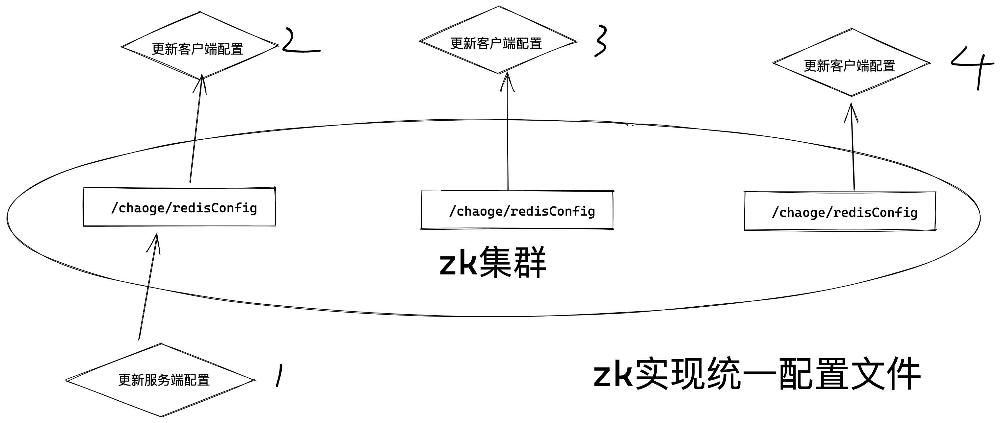
6.ACL权限控制
access control lists 权限控制
1. 针对znode设置读写权限，保障数据安全
2. 权限可以指定不同的范围，以及角色
理解scheme
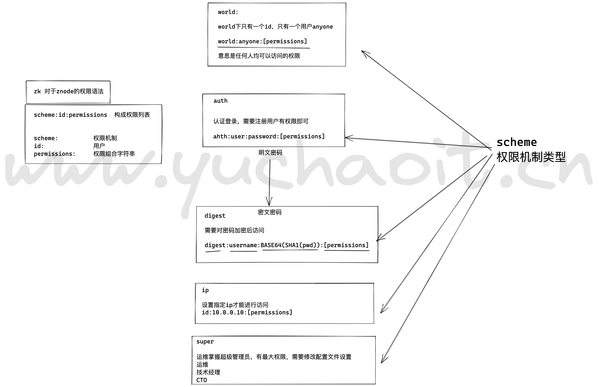
理解permissions
create 创建子节点
read 获取节点、子节点
write 设置节点数据
delete 删除子节点
admin 管理员权限
缩写cdrwa 权限组合
ACL命令
getAcl 获取某znode的acl权限
setAcl 设置某znode的acl权限
addauth 输入认证授权信息，注册时输入明文密码，zk写入加密后的数据
getAcl
[zk: localhost:2181(CONNECTED) 23] getAcl /chaoge
'world,'anyone
: cdrwa
[zk: localhost:2181(CONNECTED) 24]
所有的人，所有匿名用户，都可以最大化权限操作
可以看到，默认这个/chaoge节点，是公开访问的，权限是 cdrwa也就是，允许所有权限
setAcl
[zk: localhost:2181(CONNECTED) 0]
[zk: localhost:2181(CONNECTED) 0]
[zk: localhost:2181(CONNECTED) 0]
[zk: localhost:2181(CONNECTED) 0] getAcl /chaoge/t1
'world,'anyone
: cdrwa
[zk: localhost:2181(CONNECTED) 1]
# 修改节点权限
[zk: localhost:2181(CONNECTED) 1] setAcl /chaoge/t1 world:anyone:crwa
[zk: localhost:2181(CONNECTED) 2]
[zk: localhost:2181(CONNECTED) 2] getAcl /chaoge/t1
'world,'anyone
: crwa
[zk: localhost:2181(CONNECTED) 3]
# 注意父子节点的关系，若是要测试删除，delete权限的话，若是父节点，有d权限，就是可以删除子节点的。
[zk: localhost:2181(CONNECTED) 4] getAcl /chaoge
'world,'anyone
: cdrwa
[zk: localhost:2181(CONNECTED) 5]
[zk: localhost:2181(CONNECTED) 5] getAcl /chaoge/t1
'world,'anyone
: crwa
[zk: localhost:2181(CONNECTED) 6]
[zk: localhost:2181(CONNECTED) 6] getAcl /chaoge/t1/tt1
'world,'anyone
: cdrwa
[zk: localhost:2181(CONNECTED) 7]
[zk: localhost:2181(CONNECTED) 7] delete /chaoge/t1/tt1
Authentication is not valid : /chaoge/t1/tt1
[zk: localhost:2181(CONNECTED) 8]
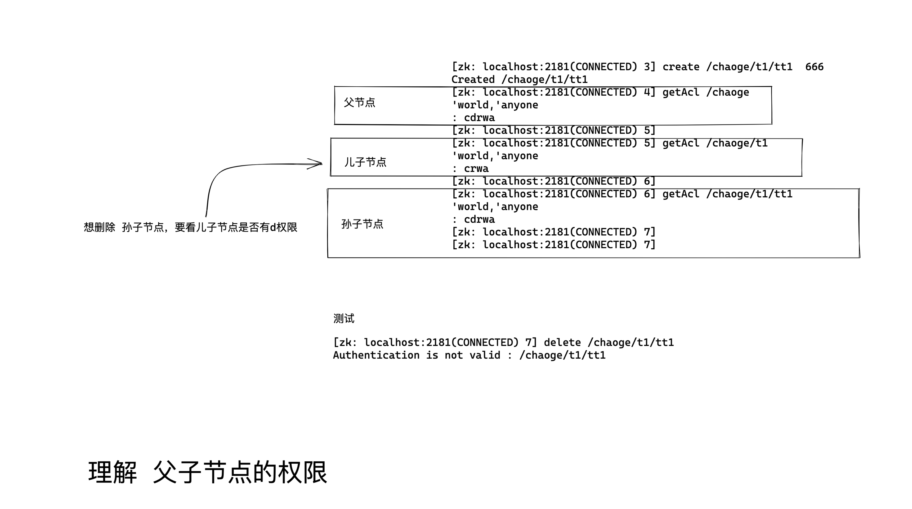
添加可删除的权限
[zk: localhost:2181(CONNECTED) 8] setAcl /chaoge/t1 world:anyone:rda
[zk: localhost:2181(CONNECTED) 9]
[zk: localhost:2181(CONNECTED) 9] getAcl /chaoge/t1
'world,'anyone
: dra
[zk: localhost:2181(CONNECTED) 10]
[zk: localhost:2181(CONNECTED) 10] delete /chaoge/t1/tt1
[zk: localhost:2181(CONNECTED) 11]
[zk: localhost:2181(CONNECTED) 11] ls /chaoge/t1
[]
[zk: localhost:2181(CONNECTED) 12]
# t1节点是可以dra权限的，注意，a权限别乱动，否则无法操作了。
world权限类型实践
[zk: localhost:2181(CONNECTED) 12] setAcl /chaoge/t1 world:anyone:a
[zk: localhost:2181(CONNECTED) 13]
[zk: localhost:2181(CONNECTED) 13]
[zk: localhost:2181(CONNECTED) 13] getAcl /chaoge/t1
'world,'anyone
: a
[zk: localhost:2181(CONNECTED) 14]
[zk: localhost:2181(CONNECTED) 14] get /chaoge/t1
org.apache.zookeeper.KeeperException$NoAuthException: KeeperErrorCode = NoAuth for /chaoge/t1
[zk: localhost:2181(CONNECTED) 15]
[zk: localhost:2181(CONNECTED) 15]
[zk: localhost:2181(CONNECTED) 15] set /chaoge/t1 111
Authentication is not valid : /chaoge/t1
[zk: localhost:2181(CONNECTED) 16]
# 重新给权限，给写入的权限
[zk: localhost:2181(CONNECTED) 16] setAcl /chaoge/t1 world:anyone:aw
[zk: localhost:2181(CONNECTED) 17]
[zk: localhost:2181(CONNECTED) 17] getAcl /chaoge/t1
'world,'anyone
: wa
[zk: localhost:2181(CONNECTED) 18] set /chaoge/t1 111
[zk: localhost:2181(CONNECTED) 19] get /chaoge/t1
org.apache.zookeeper.KeeperException$NoAuthException: KeeperErrorCode = NoAuth for /chaoge/t1
[zk: localhost:2181(CONNECTED) 20]
# 还需要给读取权限
[zk: localhost:2181(CONNECTED) 20] setAcl /chaoge/t1 world:anyone:rwa
[zk: localhost:2181(CONNECTED) 21]
[zk: localhost:2181(CONNECTED) 21]
[zk: localhost:2181(CONNECTED) 21] getAcl /chaoge/t1
'world,'anyone
: rwa
[zk: localhost:2181(CONNECTED) 22]
# 可以读取数据了
[zk: localhost:2181(CONNECTED) 23] get /chaoge/t1
111
[zk: localhost:2181(CONNECTED) 24]
[zk: localhost:2181(CONNECTED) 24]
Auth类型实践
[zk: localhost:2181(CONNECTED) 25]
[zk: localhost:2181(CONNECTED) 25] create /names
Created /names
[zk: localhost:2181(CONNECTED) 26] ls /
[chaoge, names, zookeeper]
[zk: localhost:2181(CONNECTED) 27] get /names
null
[zk: localhost:2181(CONNECTED) 28]
[zk: localhost:2181(CONNECTED) 28] getAcl /names
'world,'anyone
: cdrwa
[zk: localhost:2181(CONNECTED) 29]
[zk: localhost:2181(CONNECTED) 29] create /names/yu 666
Created /names/yu
[zk: localhost:2181(CONNECTED) 30]
# 需要先注册用户，等于登录账号密码
[zk: localhost:2181(CONNECTED) 30] addauth digest yuchao:chaoge666
[zk: localhost:2181(CONNECTED) 31]
# 密码是加密显示的
# 首次给znode设置账密之后，后续的处理，就是以改用户的认证操作了
# 给znode设置对应的账密
[zk: localhost:2181(CONNECTED) 32] setAcl /names/yu auth:yuchao:chaoge666:cdrwa
[zk: localhost:2181(CONNECTED) 33]
[zk: localhost:2181(CONNECTED) 33] getAcl /names/yu
'digest,'yuchao:fGk68NJLSXUaVJQTDztOdxFRv7g=
: cdrwa
[zk: localhost:2181(CONNECTED) 34]
[zk: localhost:2181(CONNECTED) 32] setAcl /names/yu auth:yuchao:chaoge666:cdrwa
[zk: localhost:2181(CONNECTED) 33]
[zk: localhost:2181(CONNECTED) 33] getAcl /names/yu
'digest,'yuchao:fGk68NJLSXUaVJQTDztOdxFRv7g=
: cdrwa
[zk: localhost:2181(CONNECTED) 34]
[zk: localhost:2181(CONNECTED) 34] get /names/yu
666
[zk: localhost:2181(CONNECTED) 35] setAcl /names/yu auth::cdrwa
[zk: localhost:2181(CONNECTED) 36] getAcl /names/yu
'digest,'yuchao:fGk68NJLSXUaVJQTDztOdxFRv7g=
: cdrwa
# 即使再填入账号密码，也无用，以第一次的auth账密为准
[zk: localhost:2181(CONNECTED) 37] setAcl /names/yu auth:xxx:xxx:cdrwa
[zk: localhost:2181(CONNECTED) 38] getAcl /names/yu
'digest,'yuchao:fGk68NJLSXUaVJQTDztOdxFRv7g=
: cdrwa
[zk: localhost:2181(CONNECTED) 39]
[zk: localhost:2181(CONNECTED) 39] set /names/yu 777
[zk: localhost:2181(CONNECTED) 40]
[zk: localhost:2181(CONNECTED) 41] get /names/yu
777
[zk: localhost:2181(CONNECTED) 42] getAcl /names/yu
'digest,'yuchao:fGk68NJLSXUaVJQTDztOdxFRv7g=
: cdrwa
[zk: localhost:2181(CONNECTED) 43]
# 重新登录的话，需要再次用户验证
# author www.yuchaoit.cn
需要先退出当前用户
quit
重新登录后，发现访问节点无权限了
[zk: localhost:2181(CONNECTED) 0] get /names/yu
org.apache.zookeeper.KeeperException$NoAuthException: KeeperErrorCode = NoAuth for /names/yu
[zk: localhost:2181(CONNECTED) 1]
[zk: localhost:2181(CONNECTED) 12] addauth digest yuchao:chaoge666
[zk: localhost:2181(CONNECTED) 13] get /names/yu
777
[zk: localhost:2181(CONNECTED) 14]
digest类型测试
需要先退出当前用户
quit
重新登录后，发现访问节点无权限了
[zk: localhost:2181(CONNECTED) 0] get /names/yu
org.apache.zookeeper.KeeperException$NoAuthException: KeeperErrorCode = NoAuth for /names/yu
[zk: localhost:2181(CONNECTED) 1]
[zk: localhost:2181(CONNECTED) 12] addauth digest yuchao:chaoge666
[zk: localhost:2181(CONNECTED) 13] get /names/yu
777
[zk: localhost:2181(CONNECTED) 14]
确保重新登录
[zk: localhost:2181(CONNECTED) 0] create /names/yuyu 666
Created /names/yuyu
[zk: localhost:2181(CONNECTED) 1] get /names/yuyu
666
[zk: localhost:2181(CONNECTED) 2]
[zk: localhost:2181(CONNECTED) 2] getAcl /names/yuyu
'world,'anyone
: cdrwa
[zk: localhost:2181(CONNECTED) 3]
给znode设置账密，直接设置加密后的密码，别明文设置
[zk: localhost:2181(CONNECTED) 4] setAcl /names/yuyu digest:yuchao:fGk68NJLSXUaVJQTDztOdxFRv7g=:cdra
[zk: localhost:2181(CONNECTED) 5]
需要登录，才能访问了
[zk: localhost:2181(CONNECTED) 5] getAcl /names/yuyu
Authentication is not valid : /names/yuyu
[zk: localhost:2181(CONNECTED) 6]
[zk: localhost:2181(CONNECTED) 6] get /names/yuyu
org.apache.zookeeper.KeeperException$NoAuthException: KeeperErrorCode = NoAuth for /names/yuyu
[zk: localhost:2181(CONNECTED) 7]
登录还是等用明文，就好
[zk: localhost:2181(CONNECTED) 7]
[zk: localhost:2181(CONNECTED) 7] addauth digest yuchao:chaoge666
[zk: localhost:2181(CONNECTED) 8]
[zk: localhost:2181(CONNECTED) 8] get /names/yuyu
666
[zk: localhost:2181(CONNECTED) 9] getAcl /names/yuyu
'digest,'yuchao:fGk68NJLSXUaVJQTDztOdxFRv7g=
: cdra
[zk: localhost:2181(CONNECTED) 10]
测试读写
[zk: localhost:2181(CONNECTED) 9] getAcl /names/yuyu
'digest,'yuchao:fGk68NJLSXUaVJQTDztOdxFRv7g=
: cdra
[zk: localhost:2181(CONNECTED) 10]
[zk: localhost:2181(CONNECTED) 10] set /names/yuyu 777 # 无w权限
Authentication is not valid : /names/yuyu
[zk: localhost:2181(CONNECTED) 11]
[zk: localhost:2181(CONNECTED) 11] delete /names/yuyu
[zk: localhost:2181(CONNECTED) 12]
[zk: localhost:2181(CONNECTED) 12] get /names/yuyu
org.apache.zookeeper.KeeperException$NoNodeException: KeeperErrorCode = NoNode for /names/yuyu
[zk: localhost:2181(CONNECTED) 13]
[zk: localhost:2181(CONNECTED) 13] ls /names
[yu]
[zk: localhost:2181(CONNECTED) 14]
ip类型验证
该功能用于限制客户端访问
重新登录后
[zk: localhost:2181(CONNECTED) 0]
[zk: localhost:2181(CONNECTED) 0] create /names/ip ip666
Created /names/ip
[zk: localhost:2181(CONNECTED) 1]
[zk: localhost:2181(CONNECTED) 1] getAcl /names/ip
'world,'anyone
: cdrwa
[zk: localhost:2181(CONNECTED) 2]
[zk: localhost:2181(CONNECTED) 2] setAcl /names/ip ip:10.0.0.1:cdrwa
[zk: localhost:2181(CONNECTED) 3] getAcl /names/ip
Authentication is not valid : /names/ip
[zk: localhost:2181(CONNECTED) 4]
[zk: localhost:2181(CONNECTED) 4]
[zk: localhost:2181(CONNECTED) 4]
然后还得用代码客户端测试，才能演示ip效果。
super超级用户
当你忘记普通用户的密码，无权限操作znode时咋办，需要超级用户了。
1. 修改zkServer.sh 添加super管理员
nohup "$JAVA" $ZOO_DATADIR_AUTOCREATE "-Dzookeeper.log.dir=${ZOO_LOG_DIR}" \
"-Dzookeeper.DigestAuthenticationProvider.superDigest=yuchao:fGk68NJLSXUaVJQTDztOdxFRv7g=" \
"-Dzookeeper.log.file=${ZOO_LOG_FILE}" "-Dzookeeper.root.logger=${ZOO_LOG4J_PROP}" \
-XX:+HeapDumpOnOutOfMemoryError -XX:OnOutOfMemoryError='kill -9 %p' \
-cp "$CLASSPATH" $JVMFLAGS $ZOOMAIN "$ZOOCFG" > "$_ZOO_DAEMON_OUT" 2>&1 < /dev/null &
2. 重启zk
[root@devops01 /opt/zookeeper/bin]#
[root@devops01 /opt/zookeeper/bin]#
[root@devops01 /opt/zookeeper/bin]#./zkServer.sh restart
/usr/bin/java
ZooKeeper JMX enabled by default
Using config: /opt/zookeeper/bin/../conf/zoo.cfg
/usr/bin/java
ZooKeeper JMX enabled by default
Using config: /opt/zookeeper/bin/../conf/zoo.cfg
Stopping zookeeper ... STOPPED
/usr/bin/java
ZooKeeper JMX enabled by default
Using config: /opt/zookeeper/bin/../conf/zoo.cfg
Starting zookeeper ... STARTED
[root@devops01 /opt/zookeeper/bin]#
3.客户端操作，再次登录
[zk: localhost:2181(CONNECTED) 0] ls /names
[ip, yu]
[zk: localhost:2181(CONNECTED) 1] ls /names/ip
Authentication is not valid : /names/ip
[zk: localhost:2181(CONNECTED) 2]
[zk: localhost:2181(CONNECTED) 2] get /names/ip
org.apache.zookeeper.KeeperException$NoAuthException: KeeperErrorCode = NoAuth for /names/ip
[zk: localhost:2181(CONNECTED) 3]
[zk: localhost:2181(CONNECTED) 3] getAcl /names/ip
Authentication is not valid : /names/ip
[zk: localhost:2181(CONNECTED) 4]
[zk: localhost:2181(CONNECTED) 4]
4.登录超级用户，有权限了
[zk: localhost:2181(CONNECTED) 4] addauth digest yuchao:chaoge666
[zk: localhost:2181(CONNECTED) 5]
[zk: localhost:2181(CONNECTED) 5] getAcl /names/ip
'ip,'10.0.0.1
: cdrwa
[zk: localhost:2181(CONNECTED) 6]
[zk: localhost:2181(CONNECTED) 6] get /names/ip
ip666
[zk: localhost:2181(CONNECTED) 7]
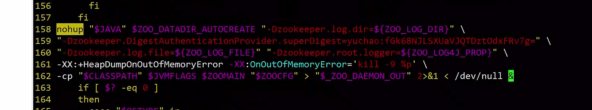
acl使用场景
1. 基于acl实现、开发、测试环境分离，互相无权限操作对应节点，只能读取。
2. 生产下限制可访问的ip
7.zk四字命令
1. zk提供了一些简单命令，和服务端交互
2. 用nc命令测试 yum install nc -y
3. 要修改zoo.cfg配置文件
[root@devops01 /opt/zookeeper]#tail -1 ./conf/zoo.cfg
4lw.commands.whitelist=stat, ruok, conf, isro,dump,cons ,envi
[root@devops01 /opt/zookeeper]#
4.重启
[root@devops01 /opt/zookeeper]#./bin/zkServer.sh restart
/usr/bin/java
ZooKeeper JMX enabled by default
Using config: /opt/zookeeper/bin/../conf/zoo.cfg
/usr/bin/java
ZooKeeper JMX enabled by default
Using config: /opt/zookeeper/bin/../conf/zoo.cfg
Stopping zookeeper ... STOPPED
/usr/bin/java
ZooKeeper JMX enabled by default
Using config: /opt/zookeeper/bin/../conf/zoo.cfg
Starting zookeeper ... STARTED
[root@devops01 /opt/zookeeper]#
参考资料
https://zookeeper.apache.org/doc/current/zookeeperAdmin.html#sc_maintenance
3. 官网
https://zookeeper.apache.org/doc/r3.4.13/zookeeperAdmin.html#sc_zkCommands
4.stat命令，查看zk状态信息
[root@devops01 /opt/zookeeper]#echo stat | nc 10.0.0.18 2181
Zookeeper version: 3.5.6-c11b7e26bc554b8523dc929761dd28808913f091, built on 10/08/2019 20:18 GMT
Clients:
/10.0.0.18:43450[0](queued=0,recved=1,sent=0)
Latency min/avg/max: 0/0/0
Received: 1
Sent: 0
Connections: 1
Outstanding: 0
Zxid: 0x300000006
Mode: follower # 集群模式，还有standalone单机模式
Node count: 13
[root@devops01 /opt/zookeeper]#
5.ruok ，判断节点是否运行，回复imok
[root@devops01 /opt/zookeeper]#echo ruok | nc 10.0.0.18 2181
imok[root@devops01 /opt/zookeeper]#
6.dump命令.
[root@devops01 /opt/zookeeper]#echo dump | nc 10.0.0.18 2181
SessionTracker dump:
Global Sessions(1):
0x1001aca8d1e0000 30000ms
ephemeral nodes dump:
Sessions with Ephemerals (0):
Connections dump:
Connections Sets (3)/(2):
0 expire at Sat Nov 12 01:44:13 CST 2022:
1 expire at Sat Nov 12 01:44:23 CST 2022:
ip: /10.0.0.18:43476 sessionId: 0x0 # 临时nc链接的会话
1 expire at Sat Nov 12 01:44:33 CST 2022:
ip: /127.0.0.1:41334 sessionId: 0x1001aca8d1e0000 # 有一个客户端
[root@devops01 /opt/zookeeper]#
6.1 创建临时节点，会被dump显示出来
[zk: localhost:2181(CONNECTED) 0] create -e /tmpChao
Created /tmpChao
[zk: localhost:2181(CONNECTED) 1] ls /
[chaoge, names, tmpChao, zookeeper]
[zk: localhost:2181(CONNECTED) 2]
7. isro 查看是否只读
[root@devops01 /opt/zookeeper]#
[root@devops01 /opt/zookeeper]#echo isro | nc 10.0.0.18 2181
rw[root@devops01 /opt/zookeeper]#
8.查看zk服务器端配置
[root@devops01 /opt/zookeeper]#echo conf | nc 10.0.0.18 2181
clientPort=2181
secureClientPort=-1
dataDir=/opt/zookeeper/zkData/version-2
dataDirSize=268436634
dataLogDir=/opt/zookeeper/zkData/version-2
dataLogSize=268436634
tickTime=2000
maxClientCnxns=60
minSessionTimeout=4000
maxSessionTimeout=40000
serverId=1
initLimit=10
syncLimit=5
electionAlg=3
electionPort=3888
quorumPort=2888
peerType=0
membership:
server.1=10.0.0.18:2888:3888:participant
server.2=10.0.0.19:2888:3888:participant
server.3=10.0.0.20:2888:3888:participant
version=0[root@devops01 /opt/zookeeper]#
# author by ,www.yuchaoit.cn
9. cons展示链接到服务器的客户端列表
[root@devops01 /opt/zookeeper]#echo cons | nc 10.0.0.18 2181
/127.0.0.1:41398[1](queued=0,recved=2,sent=2,sid=0x1001ad2288d0000,lop=PING,est=1668189236891,to=30000,lcxid=0x0,lzxid=0xffffffffffffffff,lresp=450673669,llat=0,minlat=0,avglat=0,maxlat=0)
/10.0.0.18:43540[0](queued=0,recved=1,sent=0)
[root@devops01 /opt/zookeeper]#
10. 显示默认zk的变量
[root@devops01 /opt/zookeeper]#echo envi | nc 10.0.0.18 2181
Environment:
zookeeper.version=3.5.6-c11b7e26bc554b8523dc929761dd28808913f091, built on 10/08/2019 20:18 GMT
host.name=devops01
java.version=1.8.0_181
java.vendor=Oracle Corporation
java.home=/usr/java/jdk1.8.0_181-amd64/jre
java.class.path=/opt/zookeeper/bin/../zookeeper-server/target/classes:/opt/zookeeper/bin/../build/classes:/opt/zookeeper/bin/../zookeeper-server/target/lib/*.jar:/opt/zookeeper/bin/../build/lib/*.jar:/opt/zookeeper/bin/../lib/zookeeper-jute-3.5.6.jar:/opt/zookeeper/bin/../lib/zookeeper-3.5.6.jar:/opt/zookeeper/bin/../lib/slf4j-log4j12-1.7.25.jar:/opt/zookeeper/bin/../lib/slf4j-api-1.7.25.jar:/opt/zookeeper/bin/../lib/netty-transport-native-unix-common-4.1.42.Final.jar:/opt/zookeeper/bin/../lib/netty-transport-native-epoll-4.1.42.Final.jar:/opt/zookeeper/bin/../lib/netty-transport-4.1.42.Final.jar:/opt/zookeeper/bin/../lib/netty-resolver-4.1.42.Final.jar:/opt/zookeeper/bin/../lib/netty-handler-4.1.42.Final.jar:/opt/zookeeper/bin/../lib/netty-common-4.1.42.Final.jar:/opt/zookeeper/bin/../lib/netty-codec-4.1.42.Final.jar:/opt/zookeeper/bin/../lib/netty-buffer-4.1.42.Final.jar:/opt/zookeeper/bin/../lib/log4j-1.2.17.jar:/opt/zookeeper/bin/../lib/json-simple-1.1.1.jar:/opt/zookeeper/bin/../lib/jline-2.11.jar:/opt/zookeeper/bin/../lib/jetty-util-9.4.17.v20190418.jar:/opt/zookeeper/bin/../lib/jetty-servlet-9.4.17.v20190418.jar:/opt/zookeeper/bin/../lib/jetty-server-9.4.17.v20190418.jar:/opt/zookeeper/bin/../lib/jetty-security-9.4.17.v20190418.jar:/opt/zookeeper/bin/../lib/jetty-io-9.4.17.v20190418.jar:/opt/zookeeper/bin/../lib/jetty-http-9.4.17.v20190418.jar:/opt/zookeeper/bin/../lib/javax.servlet-api-3.1.0.jar:/opt/zookeeper/bin/../lib/jackson-databind-2.9.10.jar:/opt/zookeeper/bin/../lib/jackson-core-2.9.10.jar:/opt/zookeeper/bin/../lib/jackson-annotations-2.9.10.jar:/opt/zookeeper/bin/../lib/commons-cli-1.2.jar:/opt/zookeeper/bin/../lib/audience-annotations-0.5.0.jar:/opt/zookeeper/bin/../zookeeper-*.jar:/opt/zookeeper/bin/../zookeeper-server/src/main/resources/lib/*.jar:/opt/zookeeper/bin/../conf:
java.library.path=/usr/java/packages/lib/amd64:/usr/lib64:/lib64:/lib:/usr/lib
java.io.tmpdir=/tmp
java.compiler=<NA>
os.name=Linux
os.arch=amd64
os.version=3.10.0-862.el7.x86_64
user.name=root
user.home=/root
user.dir=/opt/apache-zookeeper-3.5.6-bin
os.memory.free=43MB
os.memory.max=889MB
os.memory.total=57MB
[root@devops01 /opt/zookeeper]#
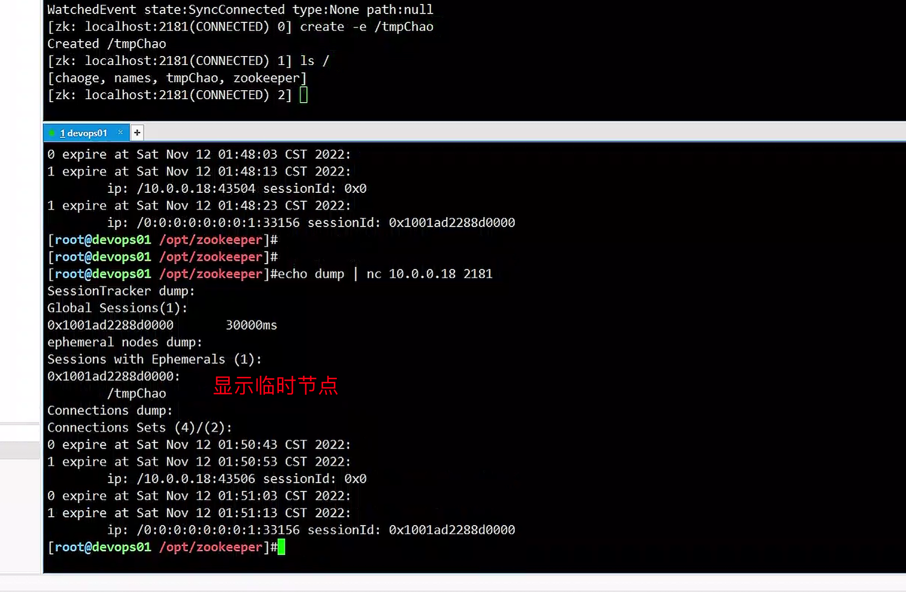
11. mntr 监控zk状态
[root@devops01 ~]#tail -1 /opt/zookeeper/conf/zoo.cfg
4lw.commands.whitelist=stat, ruok, conf, isro,dump,cons,envi,mntr
[root@devops01 ~]#
[root@devops01 ~]#echo mntr | nc localhost 2181
zk_version 3.5.6-c11b7e26bc554b8523dc929761dd28808913f091, built on 10/08/2019 20:18 GMT
zk_avg_latency 0
zk_max_latency 0
zk_min_latency 0
zk_packets_received 1
zk_packets_sent 0
zk_num_alive_connections 1
zk_outstanding_requests 0
zk_server_state follower
zk_znode_count 13 # 有几个znode
zk_watch_count 0
zk_ephemerals_count 0 # 有几个临时节点
zk_approximate_data_size 323
zk_open_file_descriptor_count 59
zk_max_file_descriptor_count 4096
[root@devops01 ~]#
12.wchs 展示watch监控器信息
[root@devops01 ~]#!tail
tail -1 /opt/zookeeper/conf/zoo.cfg
4lw.commands.whitelist=stat, ruok, conf, isro,dump,cons,envi,mntr ,wchs
[root@devops01 ~]#
[root@devops01 ~]#echo wchs | nc localhost 2181
0 connections watching 0 paths
Total watches:0
[root@devops01 ~]#
默认没有监听器，设置一个zk客户端
[zk: localhost:2181(CONNECTED) 0] get -w /names
null
[zk: localhost:2181(CONNECTED) 1] get -w /
[zk: localhost:2181(CONNECTED) 2]
再查询监听器
[root@devops01 ~]#echo wchs | nc localhost 2181
1 connections watching 2 paths
Total watches:2
[root@devops01 ~]#
13.
# wchp按监听的path分类显示
# wchc按会话显示监听器分类
[root@devops01 ~]#tail -1 /opt/zookeeper/conf/zoo.cfg
4lw.commands.whitelist=stat, ruok, conf, isro,dump,cons,envi,mntr ,wchs,wchp,wchc
[root@devops01 ~]#
[root@devops01 ~]#echo wchp | nc localhost 2181
/names
0x10028b867e30002
/
0x10028b867e30002
[root@devops01 ~]#echo wchc | nc localhost 2181
0x10028b867e30002
/names
/
[root@devops01 ~]#